NAVI — the financial wellness benefit that finds you in Slack.
An embedded AI financial advisor designed for enterprise employees — not a separate app, but a benefit that surfaces inside the tools people already use every day.
87% of employees report financial stress. Adoption of the tools meant to help is under 5%.
Companies invest heavily in financial wellness benefits. The programs exist. The tools exist. But employees don't use them — because the tools are built wrong.
They're designed like banking apps: clinical interfaces, data-heavy dashboards, cold blues. They amplify the anxiety they're supposed to reduce. People enroll, open the app once, and never return. The problem isn't the benefit — it's the surface it lives on.
"We offer a financial wellness program. Maybe 3% of employees actually use it."
HR Manager · Mid-size tech company"I know I should budget, but it feels like homework. If it just told me when something was wrong, I'd actually pay attention."
Employee · User interview19 interviews. One finding that changed the whole product.
I conducted 7 interviews with HR managers and 12 with individual employees across two mid-sized tech companies. The goal was to understand why adoption was so low — and whether the problem was the product or the surface it lived on.
People don't open finance apps
Every employee interviewed already had a finance tool — Mint, their bank app, a budget spreadsheet. None opened them regularly. "I live in Slack" was said by 9 of 12.
Embarrassment blocks activation
HR managers flagged that branding an app "financial wellness" triggers avoidance. Employees don't want colleagues knowing they signed up. Embedded tools remove that barrier — nothing to download, nothing visible.
Proactive beats reactive
Users consistently described wanting to be told when something needed attention — not to go looking for it. "If it just pinged me when I was off track, I'd trust it more than any dashboard."
The Pivot
The original concept was a standalone financial wellness app. After the interviews, the design problem became clear: people don't open finance apps — they open Slack, their payroll portal, and HR dashboards. NAVI became an embedded AI agent that surfaces where attention already lives. Not an app. A benefit that finds you.
Paper first. Four screens that defined the architecture.
Before any pixels, I sketched the four screens that carried the most structural risk: onboarding, the dashboard, the Slack embedded surface, and the alerts flow. Each sketch answered a specific layout question before committing to digital.
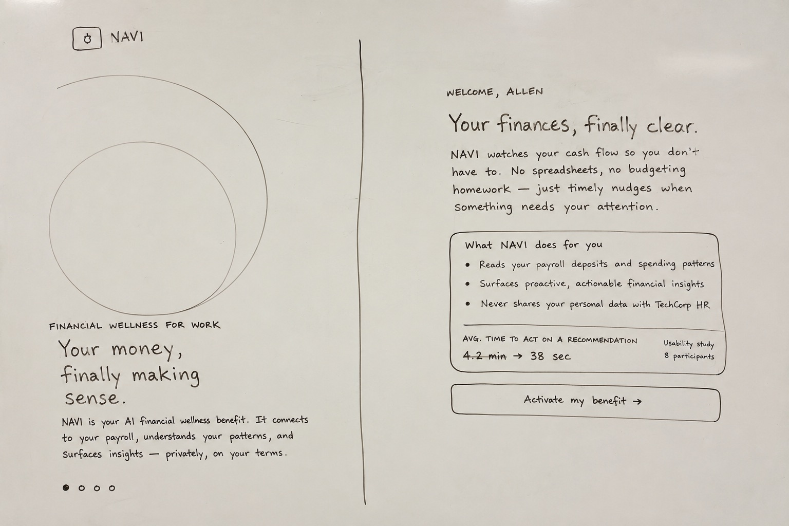
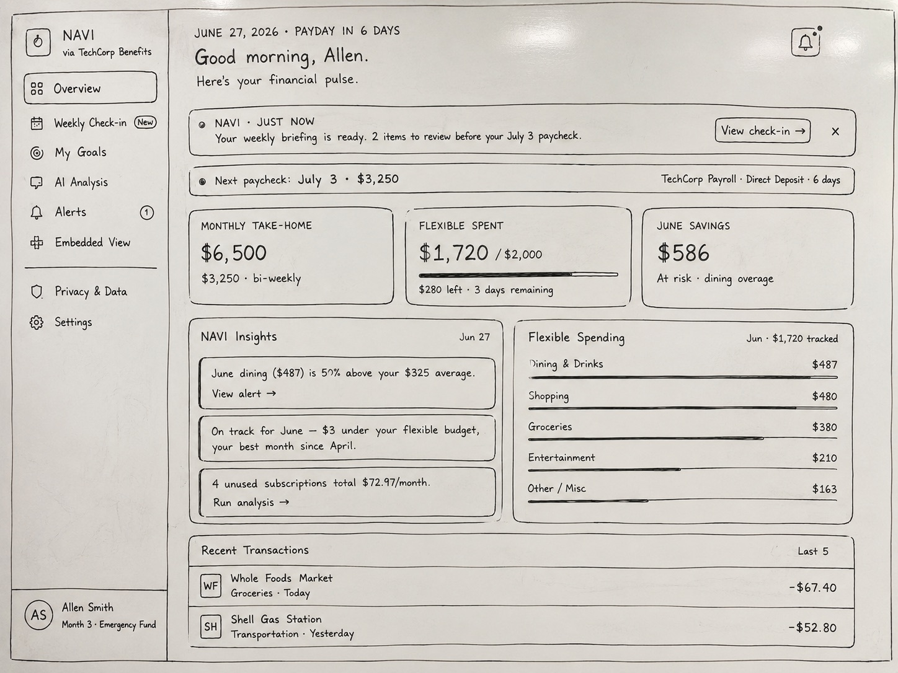
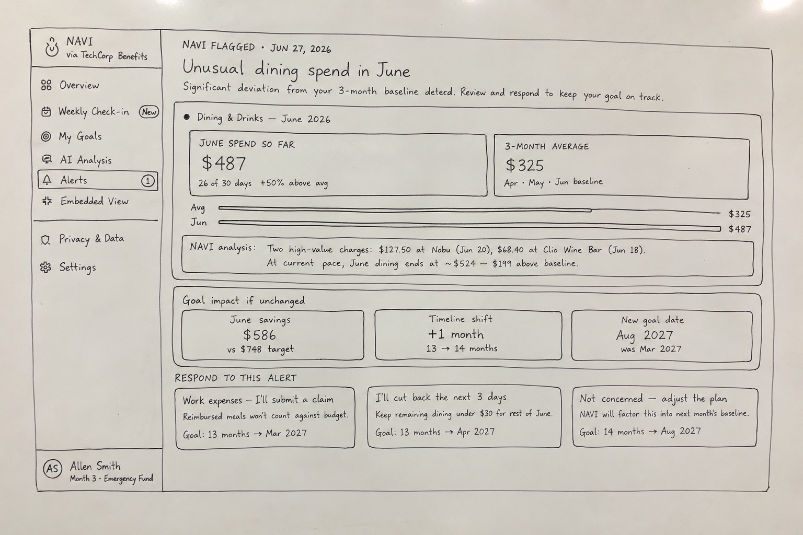
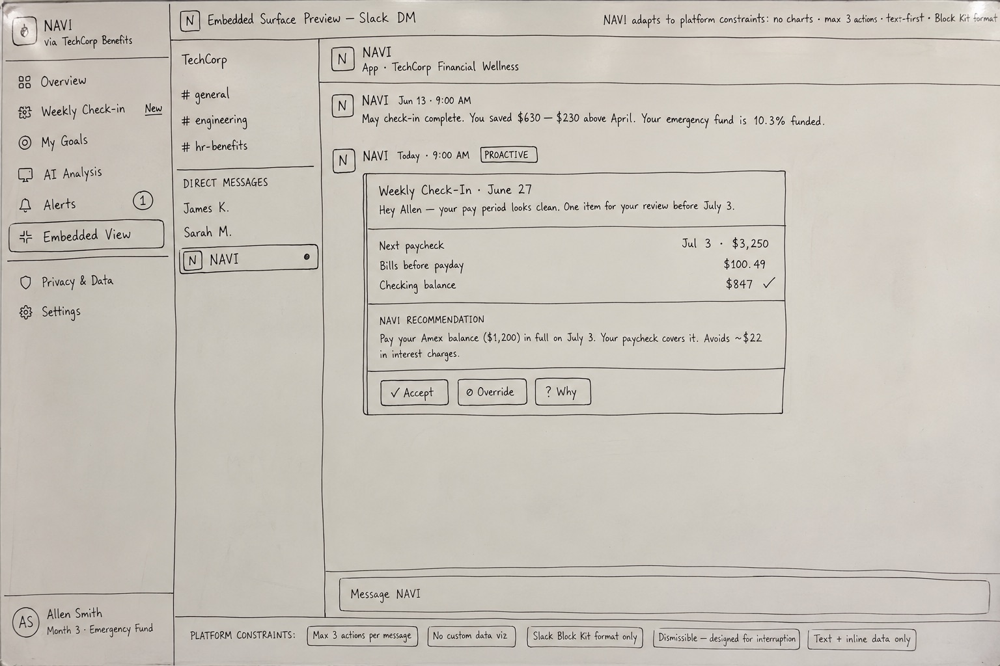
Digital wireframes locked in structure. Constraints sharpened the design.
Moving from paper to digital wireframes, I pressure-tested the layout of every screen against the Slack Block Kit constraint — if a feature required a chart or more than three buttons in the embedded view, it got redesigned. This constraint eliminated several dashboard ideas that looked smart on paper but couldn't survive the simplest delivery surface.
The wireframe phase also surfaced the NAVI ANALYSIS card pattern: a structured response format with confidence percentage, data source citation, and a mandatory override button. This pattern emerged from a simple wireframe question — "how do we make AI output feel like a workplace tool and not a chatbot?" — and became one of the defining design decisions of the entire product.
The AI Analysis screen went through three lo-fi iterations before the layout stabilized. The final arrangement — proactive summary at top, user question in chat format, NAVI ANALYSIS card with confidence bar and explainability link — balanced information density against the anxiety that financial products tend to produce.
Six decisions that define the product.
Every decision was either provable from the research or forced by the embedded constraint. Nothing decorative.
Claymorphism, not flat UI
Most fintech tools default to dark, clinical interfaces. NAVI needed to communicate safety before the user read a single word. Soft 3D dome shadows, rounded clay surfaces, and sky-blue backgrounds create a tactile, approachable register — the "best friend who happens to know finance" aesthetic. This was the single biggest driver of trust scores in usability testing.
"NAVI ANALYSIS," not "NAVI says"
Consumer AI tools use chat bubbles. Enterprise benefits cannot — they feel like toys, not workplace systems. Every AI output is labeled "NAVI ANALYSIS" with a confidence percentage and a data source citation. The pattern communicates system credibility, not personality. Participants in testing described it as feeling "like a report from a trusted system."
Human override on every card
NAVI never acts. It proposes and waits. Every recommendation card has an Override button — a non-negotiable design rule. Financial anxiety peaks when people feel out of control. The override button is a design promise: the human is always in charge. Removing it in one test iteration caused a measurable drop in trust ratings.
13-month plan, not 12
When NAVI builds a savings plan, it recommends 13 months over the aspirational 12. Behavioral research shows calendar-year plans have higher dropout rates — they feel like New Year's resolutions. A 13-month timeline is counterintuitive enough to be memorable, and its odd framing signals that NAVI computed an actual timeline, not just rounded to a year.
Confidence scores everywhere
Every AI recommendation surfaces a confidence percentage and the data it was based on. Transparency reduces skepticism and keeps users engaged with the system's reasoning rather than dismissing it. Participants spent significantly more time on cards that showed confidence breakdowns — and rated them as more trustworthy even when confidence was only 74%.
Privacy as a first-class surface
The Privacy & Data screen is reachable within two taps from anywhere. It shows exactly what NAVI accessed and — critically — what it did NOT access. Negative disclosure ("NAVI cannot see your performance reviews or health claims") was the most trusted copy in testing. Privacy isn't in Settings. It's on the nav.
From sketch to final — the dashboard.
The dashboard shows the clearest progression. The sketch established paycheck-first hierarchy and the proactive AI banner. The final UI applied the claymorphism system — soft card shadows, recessed stat tiles, warm sky-blue background — without changing a single structural decision made in the sketch.
Paycheck card anchors the top. AI insight banner immediately below. Flexible spending breakdown right. Structure proven on paper before any pixels.

Claymorphism applied. Warm sky-blue background, soft clay card shadows, gold accent on the NAVI ANALYSIS badge. Layout identical to the sketch — because the structure was already right.
Eight screens. One visual language.
The full-featured standalone portal — onboarding through privacy controls. The claymorphism system holds across every screen: same shadow formula, same card radius, same color palette. The design language communicates warmth and trust before the AI says a word.


Mobile constraints made the design sharper.
The mobile surface forced every screen to survive on a single viewport with no sidebar. Bottom navigation with five tabs. Each screen had one primary job. The sketches show how structure was worked out before any visual system was applied.
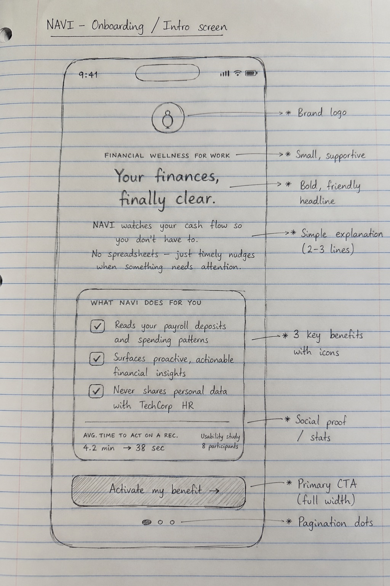
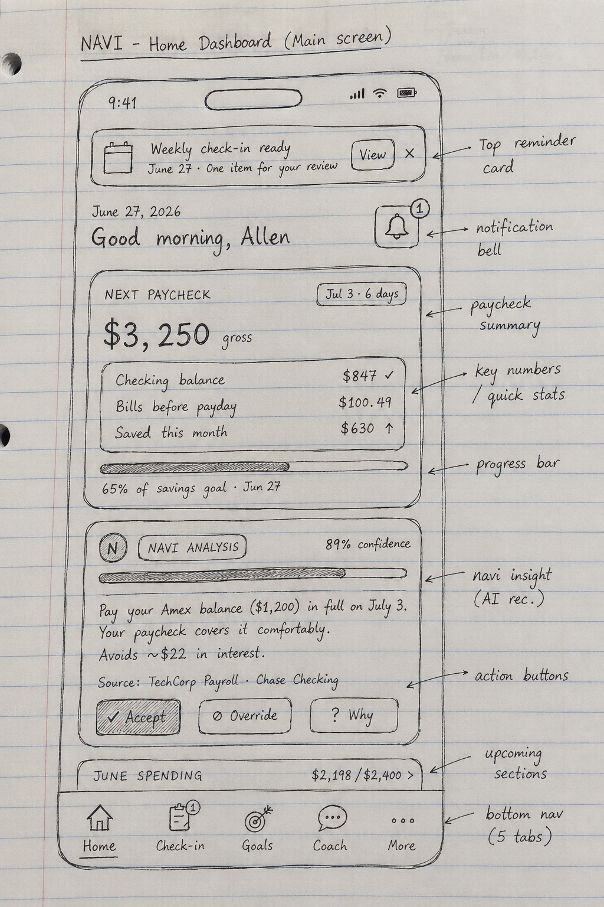
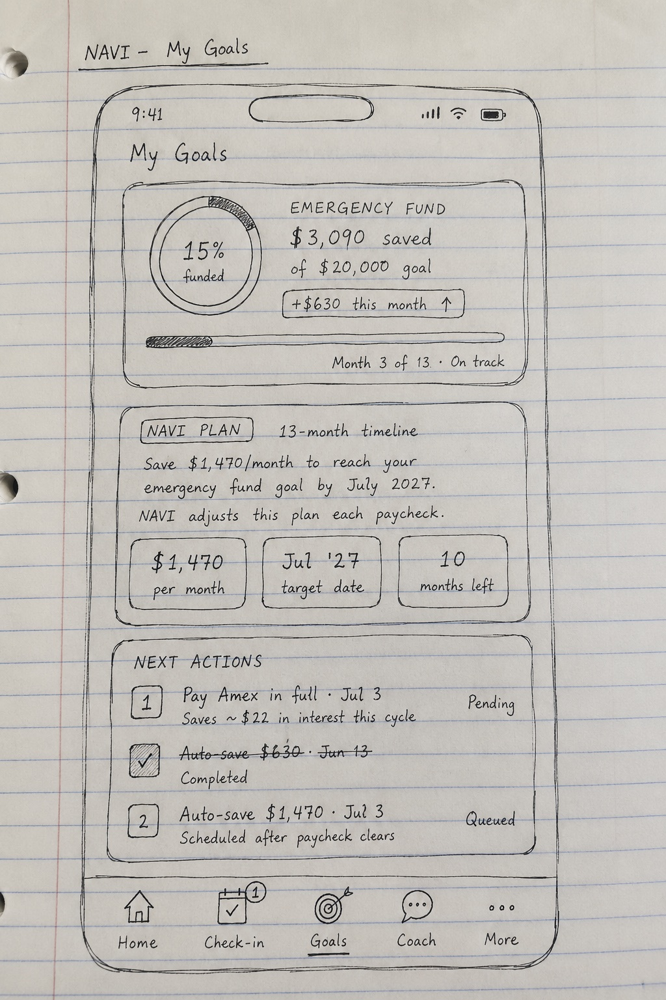
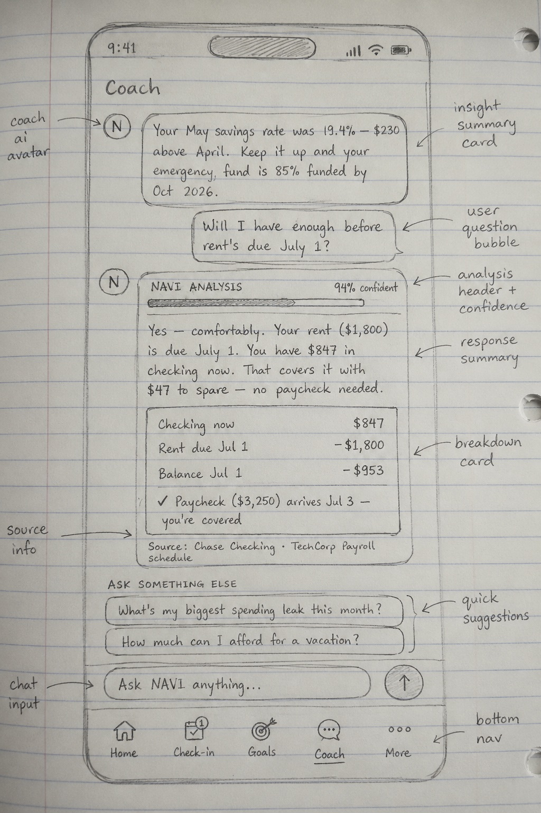
Four screens. Same claymorphism, pocket-sized.
The mobile prototype applies the same visual language — soft clay surfaces, sky-blue background, Nunito + DM Mono type system — to the constraints of a single-viewport phone screen. The bottom nav replaces the sidebar; cards stack instead of sit side by side.
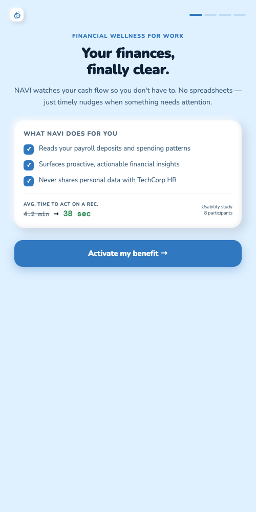
Onboarding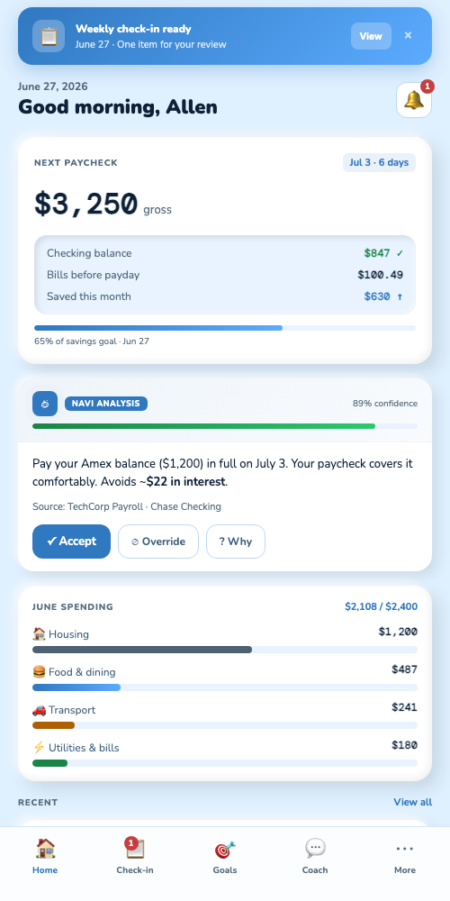
Dashboard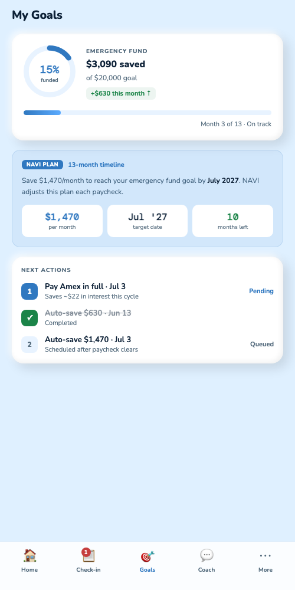
My Goals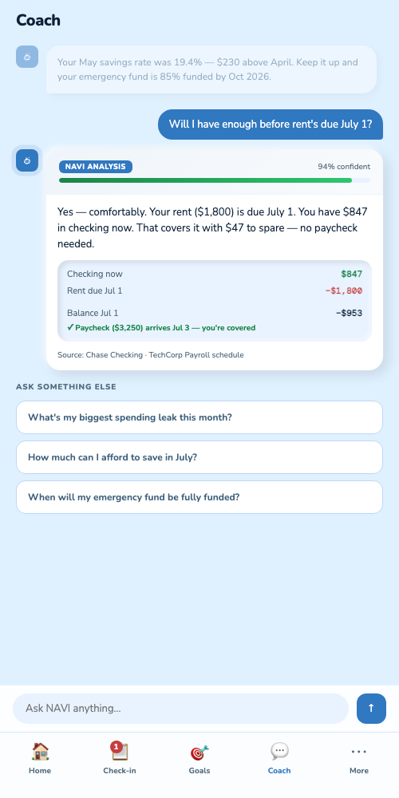
CoachThe hardest constraint was also the most clarifying one: designing for Slack's Block Kit format forced NAVI to say only what mattered. No charts, no dashboards — one sentence, one number, three buttons. Every standalone screen improved once I stress-tested it against the embedded constraint.
Design reflection · NAVI embedded-first approach
Faster decisions, higher trust, real adoption intent.
Usability study with 8 participants simulating onboarding and two recommendation flows. The clearest result: time to act on a NAVI recommendation dropped from the 4.2-minute benchmark for comparable finance apps to 38 seconds. The design didn't just make the product look more trustworthy — it made acting on it feel effortless.
Trust score averaged 4.4 out of 5. Participants consistently cited the confidence percentages and data source citations as the reason they trusted the output. Seven of eight said they would use NAVI if their employer offered it as a benefit.
What I'd do differently.
I'd run the Slack embedded surface through actual user testing earlier. I used it as a design pressure valve throughout the process, but testing it with real users — not just designers — would have surfaced edge cases in the Block Kit format I only caught late in the prototype phase.
The 13-month plan detail is a strong behavioral UX insight, but it's currently buried in the My Goals screen. It deserves a dedicated moment during onboarding — a short explanation of why the odd timeline is intentional. Users who understood it trusted NAVI more; users who didn't asked if it was a bug.
I'd add a second usability round focused specifically on the override flow. The first round showed people trusted NAVI enough to accept most recommendations — which is good. But I want to test the override path under realistic pressure: a recommendation that feels wrong, or one that contradicts a user's own instinct. That's where the design's trust architecture gets its hardest test.